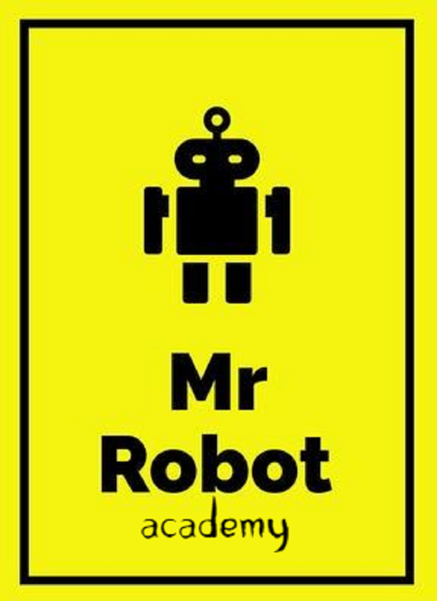

Mr Robot Academy
مهندس/ أندرو مجدي - Phone: 01285529570
💾 رحلة التعامل مع الملفات في بايثون
السابق
1 / 40
التالي
ابدأ تحدي الـ 40 سؤال 🎯
⏰
00:00
السؤال 1 / 40
⭐
0
💡 تلميحة:
⬅️ السابق
⏭️ تخطي
🔑 إجابة
التحقق من الإجابة ✅
🏆
ممتاز!
جولة جديدة 🔄